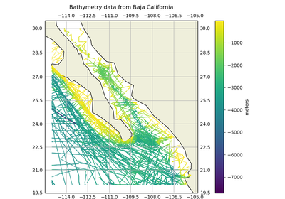

verde.datasets.fetch_baja_bathymetry¶
-
verde.datasets.fetch_baja_bathymetry(force_download=False)[source]¶ Fetch sample bathymetry data from Baja California.
This is the
@tut_ship.xyzsample data from the GMT tutorial.If the file isn’t already in your data directory (
$HOME/.verde/databy default), it will be downloaded.Parameters: - force_download : bool
If True, will download the file even if it already exists.
Returns: - data : pandas.DataFrame
The bathymetry data. Columns are longitude, latitude, and bathymetry (in meters) for each data point.
Examples using verde.datasets.fetch_baja_bathymetry¶


